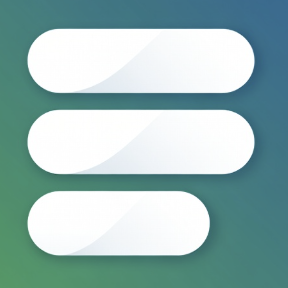

Progress bars for every Jira issue
Color-coded progress, calculated from the status, from the subtasks, or set by hand. Two dashboard gadgets show a whole project or one bar per epic.
Free for Jira sites with up to 10 users. Larger sites start with a free trial.

What you get
Screenshots from a real Jira site with sample data.
Three progress bars on every issue
Three custom field types. Use one, two or all three on the same issue; each has its own red, yellow and green bar.
- Status: follows the workflow status. A Jira admin sets what each status is worth.
- Subtasks: the average of the subtasks' status progress. Without subtasks it uses the child issues, for example the issues of an epic.
- Manual: a slider in 5% steps with quick buttons for 0, 10, 25, 50, 75 and 100%.

A project overview on your dashboard
The Progress Tracker Overview gadget lists the issues of a project with their progress and the average on top.
- Pick how it calculates: from the status, from the subtasks, or the Manual field's values.
- Narrow it down with your own JQL, for example a fix version.
- Sort by key, summary, type, status or progress. Up to 500 issues per gadget.

One bar per epic, or per person
The Epic Progress Tracker gadget rolls a project up into one bar per epic, calculated from its child issues. Switch the grouping to see progress per assignee instead.
- Group by epic or by assignee.
- Measure by issue count or by story points.

Progress in Jira list views
All three fields work as columns in Jira's list view, each with a colored dot and the percentage. Scan a whole project without opening a single issue.
- Manual, Status and Subtask progress side by side.
- List columns use fixed colors: red below 34%, yellow below 67%.

Your statuses, your colors
Jira admins decide what each workflow status is worth and where the bars turn from red to yellow to green. The fields and both gadgets use these settings for the whole site.
- Add your own statuses, for example "In QA".
- Thresholds between 1 and 99%, with a live preview.
Watch the tour
A short walkthrough of Visual Progress Tracker in Jira.
Jira alone vs. with Visual Progress Tracker
| Jira alone | With Visual Progress Tracker | |
|---|---|---|
| Progress on an issue | The status, plus a bar of how many child work items are done | Three progress fields: from the status, from the subtasks, or set by hand |
| Partial progress for a status | A status is either done or not | You decide what a status is worth, for example In Review = 75% |
| Progress in list views | No column for status- or subtask-based progress | Columns with a colored dot and the percentage |
| Project overview on a dashboard | Filter and chart gadgets, but no progress bar per issue and no project average | Overview gadget with the project average, and one bar per epic or assignee |
Compared with Jira Cloud without apps.
Running in three steps
Install
Get the app from the Atlassian Marketplace and confirm the installation on your Jira site.
Add the fields
Create the progress fields in Jira settings (Work items → Fields) and add them to your project screens.
Done
Status and Subtask progress calculate themselves. Manual progress is one click on the field.
What Jira version do I need?
Is it free for small teams?
Can I use several field types on the same issue?
Do the list view colors follow my thresholds?
Does any data leave Atlassian's infrastructure?
Also from Janek Behrens
See your backlog in color
Free for Jira sites with up to 10 users, with all features.